Q
核心問題
當 AI 進入日常工作、管理決策、服務設計、產品開發與團隊協作，組織如何保持敏捷、負責、有人味，並把不確定性轉成可落地的行動？
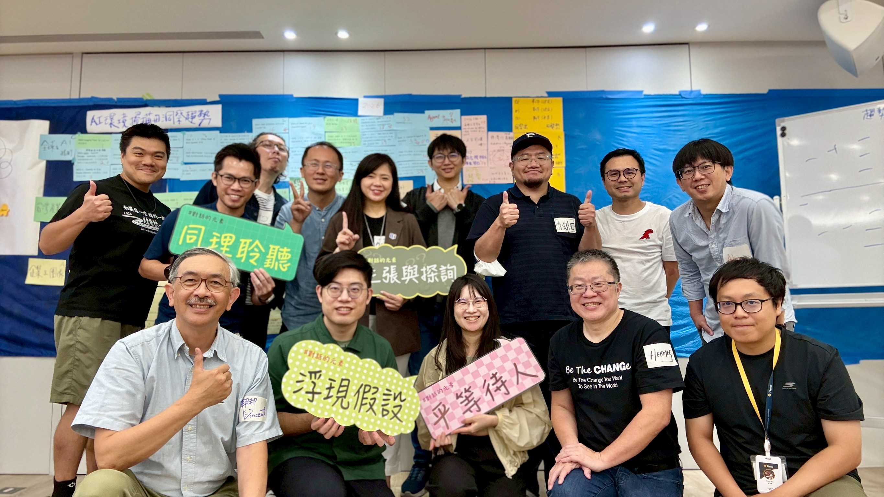
Workshop Record / AI Agile Organization
在 AI 重構工作、決策與責任邊界的時代，以敏捷精神回應不確定性；從環境掃描到未來情境，凝聚 2026 AI敏捷組織的共同行動原則。
Cover Story
本網站整理「AI敏捷組織行動原則工作坊」的流程、現場共創與成果，聚焦 2026 AI敏捷組織行動原則的形成脈絡與八項行動準則。
當 AI 進入日常工作、管理決策、服務設計、產品開發與團隊協作，組織如何保持敏捷、負責、有人味，並把不確定性轉成可落地的行動？
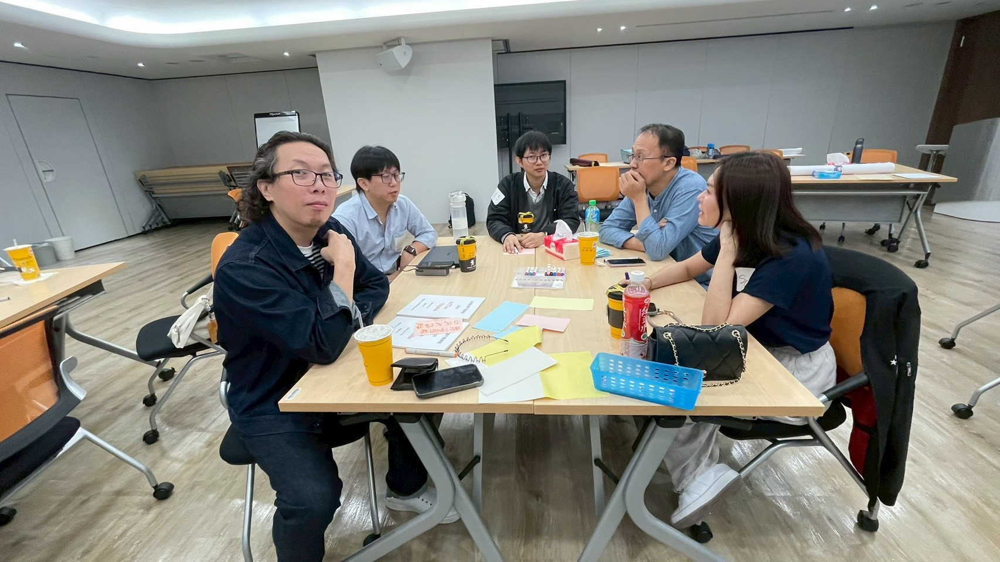
本次共創收斂為核心價值、決策原則、協作原則與 AI治理原則，共八項可實踐的組織準則。
以卡片法整理全球趨勢、台灣產業政策、企業團隊現況，從事件轉成關鍵洞察。
以情境規劃討論變革速度、智慧重構、組織重構與人機協作的不同未來。
回到組織協作、資安、資料治理與責任歸屬，將情境推導成行動原則。
分組草擬、全體修訂、語義校準，形成今日可對外發布的工作坊共創版。
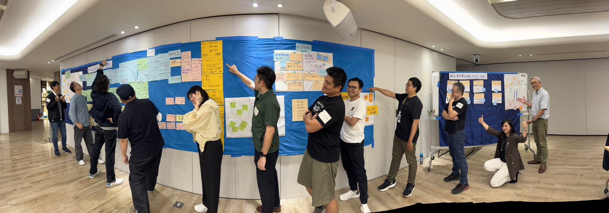
Why This Workshop
工作坊從對話影響力、敏捷社群、企業導入、政策治理與新創實務交會而來。它不是單純討論 AI 能做什麼，而是討論組織如何共同決定什麼值得做、如何做、誰負責。
討論規範以平等發言、同理傾聽、揭示假設為基礎，避免單一人主導，也避免過早把分歧壓成假共識。
參與者關注 AI 與敏捷如何整合到價值、流程、文化與落地實驗，而不是只把 AI 加到既有流程表面。
資安、個資與治理使「速度」不能單獨成為成功指標；責任、合規、品質與人的溫度同樣重要。
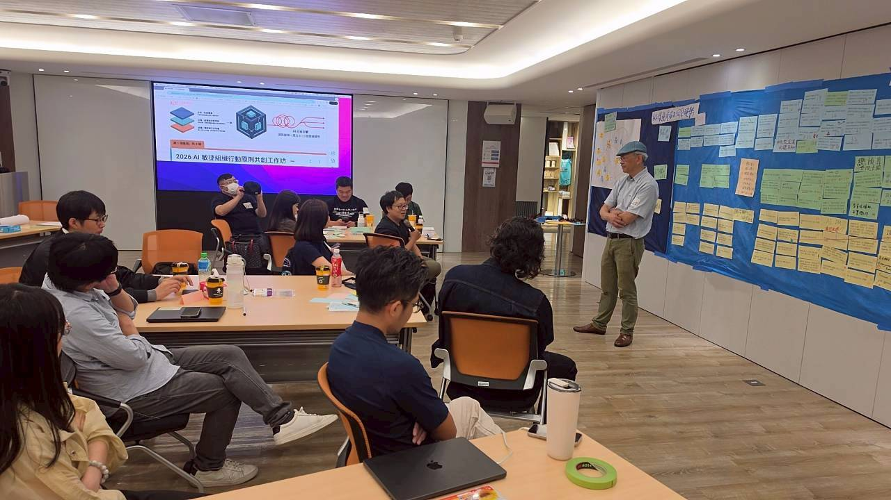
「對話影響力獎」強調以平等待人、同理聆聽、浮現假設與包容差異促成組織或社會正向改變。本工作坊將此精神延伸到 AI 時代：越是工具加速，越需要人與人共同定義價值與責任。
歷屆完整得獎名單與專案細節以主辦單位公開資料為準；本網站只摘錄與敏捷、組織轉型、對話文化及 AI 協作高度相關的脈絡。
開場活動讓每位參與者輪流在既有樹幹上畫出樹枝與樹根。最後樹根大於樹冠，成為工作坊的隱喻：AI敏捷組織要長得快，根基必須更深。
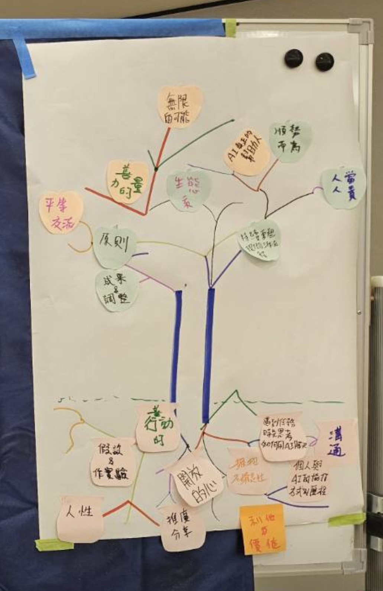
| 脈絡 | 現場觀察 | 對原則的啟發 |
|---|---|---|
| AI工具快速普及 | 從寫作、出版、設計、產品、工程到會議摘要，AI 已進入日常工作。 | 將 AI 列為解決問題的首要選項，但保留是否導入的判斷。 |
| 組織壓力升高 | AI 讓追蹤、KPI、交付與問責速度加快，也增加焦慮與品質風險。 | AI 負責產出，人為結果負責；節奏、審查與心理安全要一起設計。 |
| 社群需要方法論 | 許多人已有 AI 使用經驗，但缺乏可交流、可複製、可治理的共同語言。 | 善用 AI 提升知識與決策品質，累積個人知識與集體智慧。 |
Stage 01 / AI Scan & Insight
第一階段把會前問卷與現場討論轉成三層卡片：企業內部、台灣產業與政策、全球 AI 趨勢。目的不是比誰知道更多新聞，而是找出會改變組織行動的訊號。
AI導入、產品開發、資安攻擊、管理壓力、工作流程重塑、團隊品質審查與人才培訓。
AI補助、人才課程、AI評測中心、人工智慧基本法、金融與資安指引、資料治理與產業政策。
生成式 AI、Agent、AIFactory、AI晶片、開源模型、推理模型、多模態與法規治理。
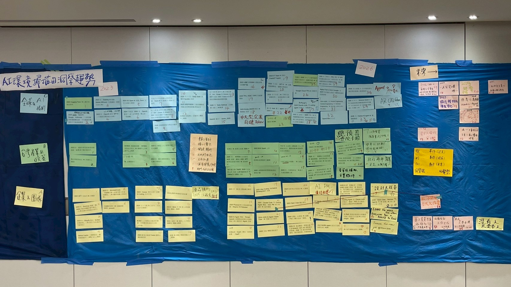
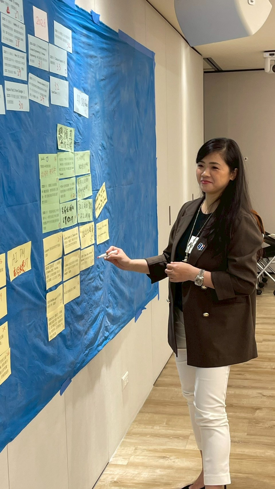
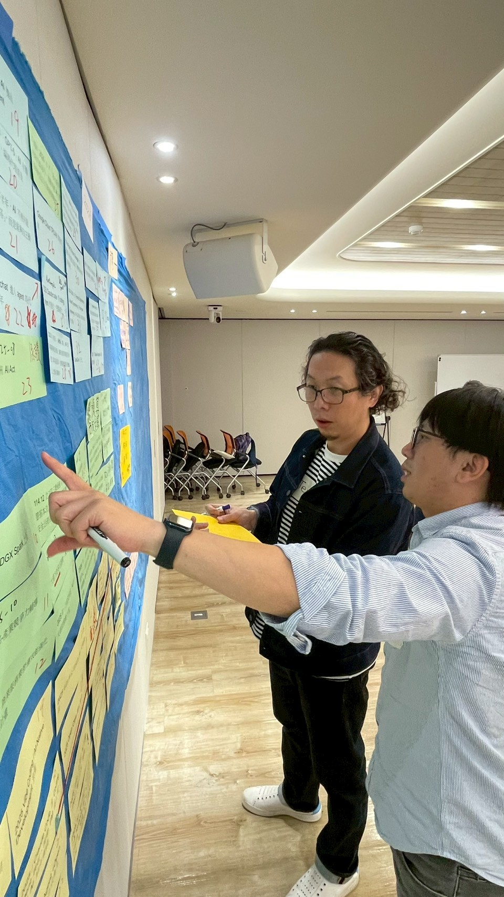
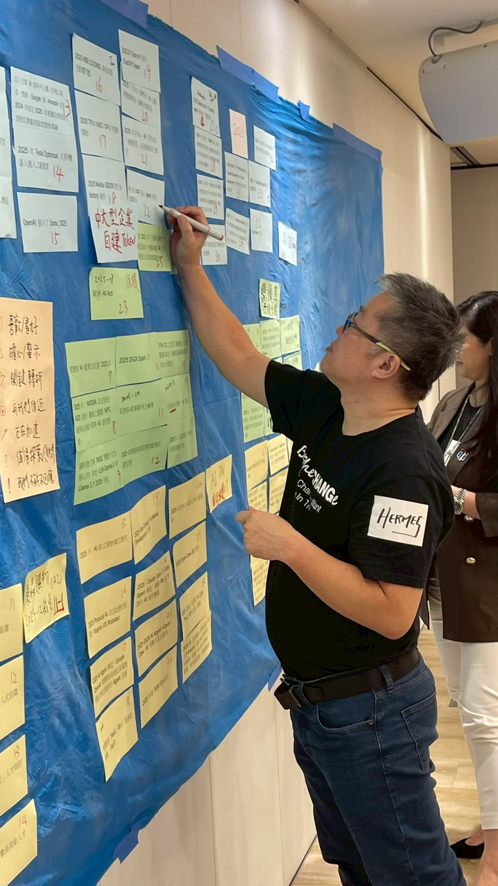
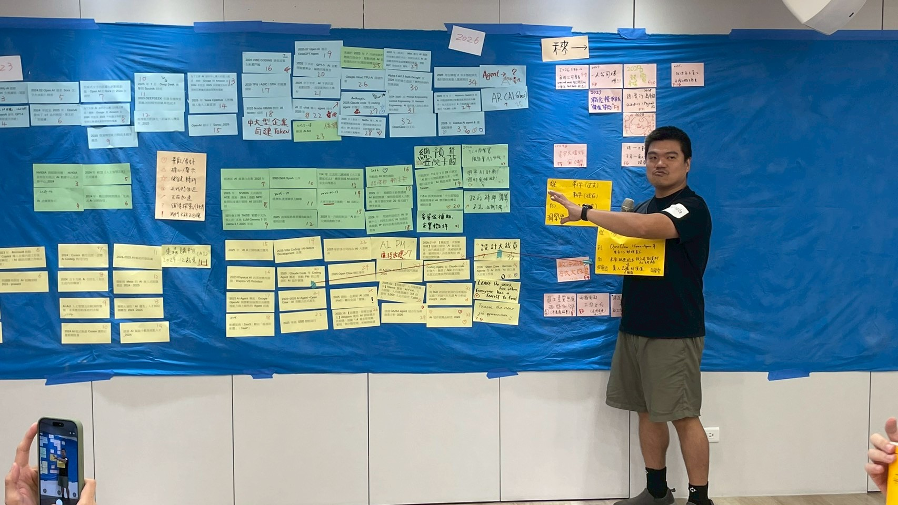
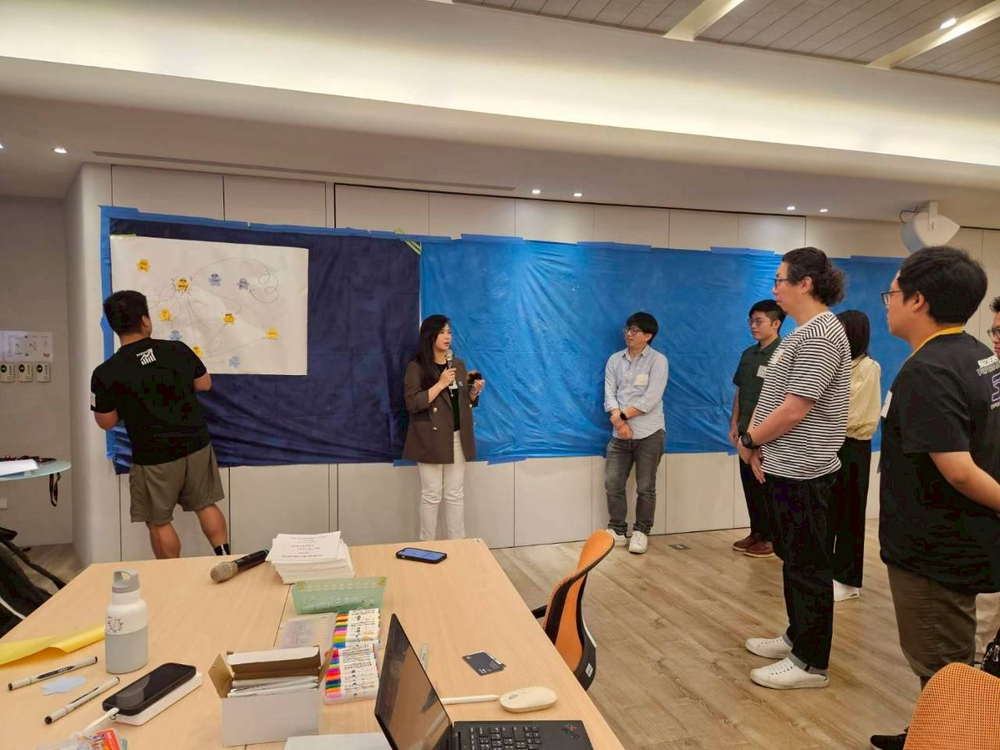
開源模型、開發者社群與生成式工具擴散；現場以 Hugging Face 普及作為早期訊號。
GPT-4、Copilot、Stable Diffusion 等工具讓生成內容與 AI 輔助開發進入主流討論；企業開始將 AI 放入內部工作流。
多模態與文生影像/影片推進；台灣成立 AI 產品與系統評測機制，歐盟 AI Act 進入施行前準備。
Agent、Product Builder、AI native 開發、開源蒸餾與企業實驗擴大；人工智慧基本法草案到三讀通過。
AI基本法於台灣公布施行；企業關注多代理、內部小系統、資料治理、算力成本、AI資安與跨角色協作。
| 掃描洞察 | 現場摘要 | 組織意義 |
|---|---|---|
| AI進入 Agent 與工作流時代 | AI 從問答轉向可執行任務、串接工具與協助完成跨步驟工作。 | 組織要設計權限、資料、審查與回饋，而非只訓練個人下 prompt。 |
| 效率提升伴隨品質風險 | 快速產碼、快速生成內容與會議摘要提高速度，也可能帶來低品質與錯誤責任問題。 | 需要分步審查、Definition of Done、人工簽核與可追溯紀錄。 |
| 資安從邊界防禦走向即時治理 | 提示注入、社交工程、高權限帳號與假網站成為討論焦點。 | AI導入必須與身份權限、監控、供應鏈與資料外洩防護一起規劃。 |
| 政策與合規成為市場門檻 | 台灣 AI基本法、AI評測中心、歐盟 AI Act、資安治理、資料來源與責任鏈被反覆提及。 | 創新與治理不能分開排程；資料來源、責任與審核要在 POC 前定義。 |
Stage 02 / Future Scenarios
第二階段用情境規劃處理不確定性。重點不是預言單一未來，而是讓組織在多種可能中看見風險、機會與需要先建立的能力。
若變革加速且知識持續累加，產品、服務與組織流程可能快速突破；若變革加速但缺乏智慧累積，則成本失控、品質退化與同質化風險上升。
若組織重構慢且 AI 只被當工具，人的上限會限制 AI 上限；若重構快且協作強，則需要更成熟的原則、責任鏈與管理品味。
產品、服務與組織流程突破，組織快速學習，AI成為知識累積與決策支援的放大器。
快速導入但缺乏判準，導致成本失控、品質下降、AI寫給AI看、責任模糊。
保留職人精神與深度專業，可能形成高品味、高信任、差異化的人本服務。
流程僵化、資料破碎、人才能力停滯，AI 只是外部壓力而非內部能力。
AI 代理可能改變 App、通路、中階管理與資訊轉譯角色，但影響程度需以產業情境驗證。
AI 可作為主管助理進行追蹤、提醒、彙整與回饋；但價值判準、品味與人際責任仍需人類主管設定。
資訊蒐集、問題釐清、原型生成、使用者驗收被 AI 壓縮週期；這是個案趨勢，不應直接泛化為所有團隊。
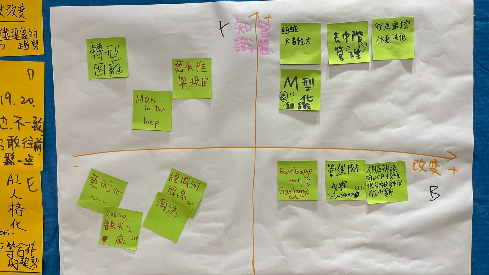
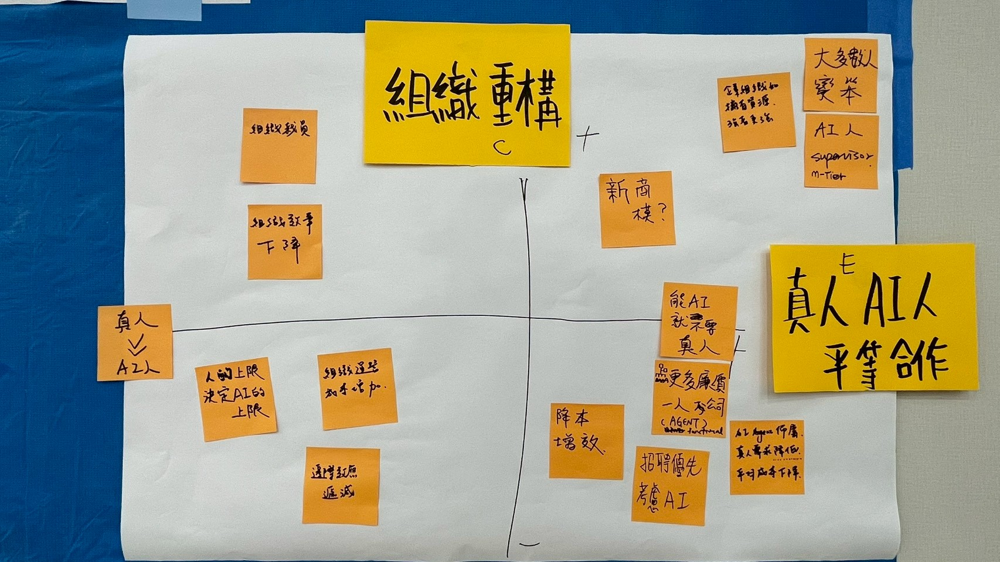
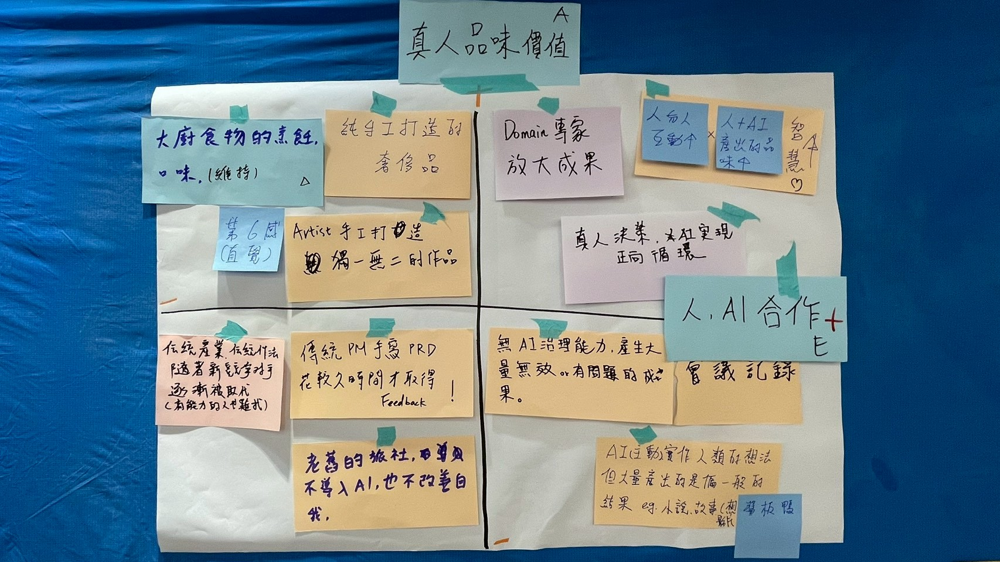
2026 Final Principles
以下定位為「2026 工作坊共創版行動原則」，作為組織導入 AI 與敏捷協作的行動參考；不是法律標準或產業正式規範。
把 AI 作為改善工作與生活的能力，而不是只用來壓縮人力與追趕速度。
由人定義目標、價值、倫理與影響，再讓 AI 放大分析、創作、協作與交付效益。
先評估 AI 是否能提升效率、品質或可近性，再決定是否導入，不把 AI 當成唯一答案。
用 AI 協助蒐集、比較、整理與提出假設，但以資料、判準、回饋與審查提升決策。
跨角色對話、情境揭露與專業判斷能讓 AI 取得更完整脈絡，避免單一視角輸出。
AI 可以產出初稿、分析與建議；使用者、審核者與組織仍要對結果、影響與承諾負責。
提供目標、邊界、資料來源、風險限制與驗收標準，而不只是零碎命令。
高品質輸入需包含脈絡、資料、判準與審查；輸入好不代表自動正確，仍要驗證。
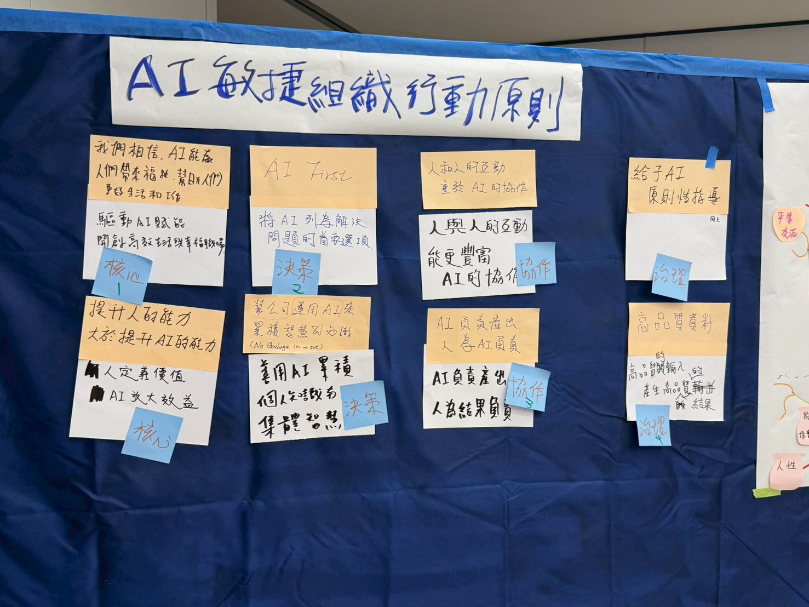
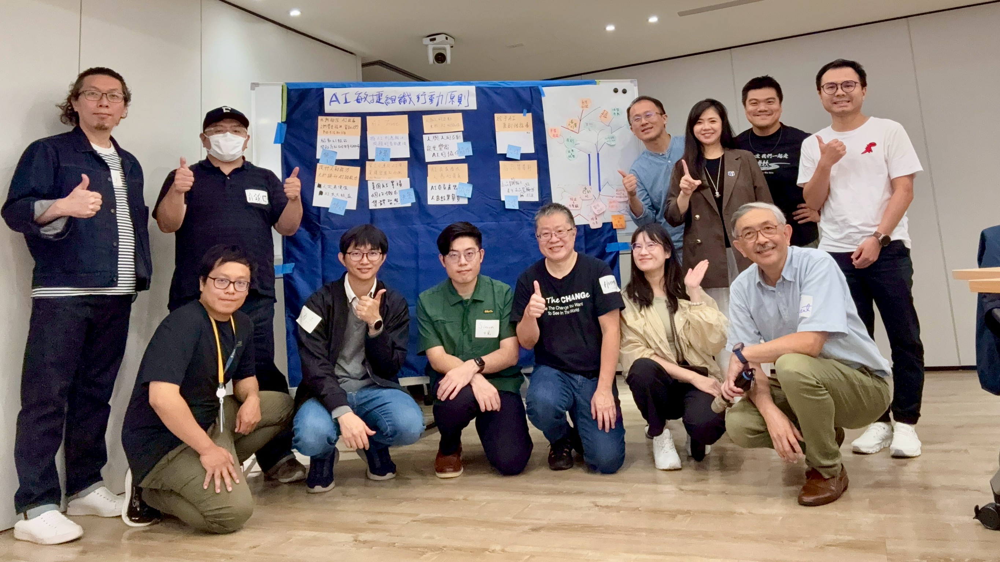
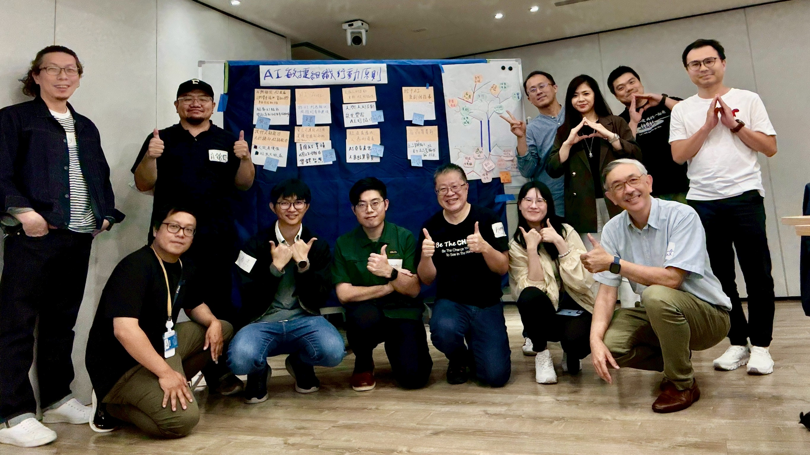
| 分類 | 原則 | 行動句 | 檢核問題 |
|---|---|---|---|
| 核心價值 | 1, 2 | 先問「這會讓人更能工作、更能生活、更能被照顧嗎？」 | 價值由誰定義？受影響的人是否被看見？ |
| 決策原則 | 3, 4 | 每個問題先做 AI 可行性評估，再用資料與回饋決策。 | AI 是否真的比既有自動化更適合？決策判準是什麼？ |
| 協作原則 | 5, 6 | 把 AI 放進團隊協作鏈，明確誰提問、誰審查、誰承擔。 | 是否有人工審核節點？是否能回溯輸入與輸出？ |
| AI治理原則 | 7, 8 | 用原則、資料品質、權限與驗收標準管理 AI。 | 資料能否使用？風險邊界是否清楚？結果如何驗證？ |
Agile References
敏捷不是盲目更快，而是在不確定中持續交付價值、檢查事實、調整行動。AI敏捷組織把這種精神延伸到人機協作、資料治理與責任設計。
套用到 AI：工具很重要，但人與互動仍是價值判斷與責任承擔的核心。
Scrum 以透明、檢視、調適支撐經驗主義；Lean 聚焦減少浪費與看見真正價值。AI導入也應讓工作可見、讓品質可檢查、讓流程可調整。
AI 不該成為黑箱捷徑，而要讓輸入、輸出、審查與決策依據更清楚。
AI導入前先看價值流：哪個等待、重工、轉貼、查找、審核或交接正在消耗人？若傳統自動化即可解決，就不必用昂貴 AI。
AI agent 產出也要納入版本控制、測試、自動化部署、資安左移、可觀測性與回復機制，避免速度犧牲可靠性。
組織若要真正放大 AI 效益，需要資料標準、系統介接、權限控管與可追溯交換流程，不能只靠前端表單或零散文件。
未來學不是預言單一答案，而是訓練組織以更有效、更有系統的方式想像多種可能未來。宋玫玫長期推動未來思考，重視跨領域對話、趨勢辨識、情境想像與從未來回看現在的行動設計。
放回本工作坊脈絡，第一階段的 AI 環境掃描、時間軸卡片、趨勢分類與第二階段的四象限情境規劃，都是未來學精神的實作：不把 AI 視為單一路徑，而是把不確定性轉成可討論、可選擇、可行動的組織判斷。
工作坊對應：環境掃描、趨勢洞察、情境矩陣、2026 行動原則。
延伸參考《力與愛：一趟引導社會變革的世界紀實》指出，複雜變革不能只靠推動目標的「力」，也不能只靠追求和諧的「愛」。力讓人能實現目的、做出選擇與承擔行動；愛讓分離的個體、團隊與利益關係重新連結。
本工作坊的 AI敏捷組織原則正是這組張力的應用：以「力」推動 AI first、決策品質、治理邊界與責任鏈；以「愛」保留平等參與、同理聆聽、人與人的互動，以及「人為結果負責」的倫理重量。
工作坊對應：對話原則、協作原則、治理原則、AI加速效率與人守護價值的平衡。
延伸參考| 延伸資料 | 核心觀點 | 本工作坊如何使用 | 對 AI敏捷組織原則的啟發 |
|---|---|---|---|
| 宋玫玫：未來學 | 未來不是被動等待，而是透過趨勢、情境與想像力被系統性探索。 | 用卡片牆整理 AI 趨勢，用時間軸定位事件，用四象限情境討論多種可能。 | 善用 AI 提升知識與決策品質；在不確定中持續調整行動。 |
| Adam Kahane：力與愛 | 有生成力的社會變革需要同時運用「力」與「愛」，在行動與連結之間取得動態平衡。 | 用對話建立信任，用原則推動決策；讓不同角色能說出假設、看見衝突、共同承擔結果。 | 人定義價值，AI放大效益；AI負責產出，人為結果負責。 |
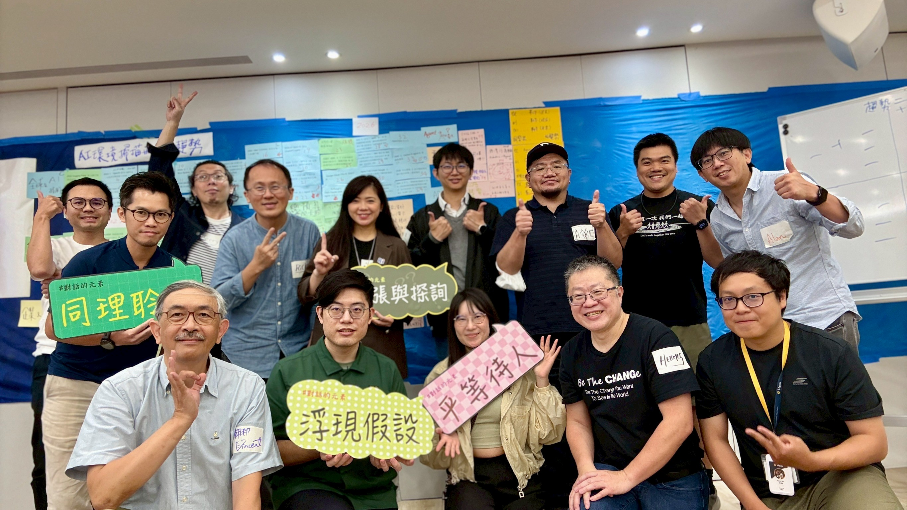
| 傳統敏捷精神 | AI敏捷組織延伸 | 落地做法 |
|---|---|---|
| 早期且持續交付價值 | 用 AI 快速產生可檢視的初稿、原型與分析。 | 30 天小實驗、Demo、使用者回饋。 |
| 歡迎變更需求 | 用 AI 協助重整假設與方案，但保留價值判斷。 | 假設清單、情境矩陣、決策紀錄。 |
| 面對面溝通 | 人與人的互動提供脈絡、情緒、利害關係與專業品味。 | 對話原則、會議摘要人審、跨角色 Review。 |
| 技術卓越與好設計 | AI產出仍需工程品質、資安、資料治理與可維護性。 | Definition of Done、測試、權限、稽核。 |
| 定期反思並調整 | 把 AI 使用經驗、失敗案例、提示與資料脈絡變成組織知識。 | AI Retrospective、案例庫、Prompt/Context 版本管理。 |
AI導入要讓客戶、同仁與夥伴更有能力，而不是只讓管理更容易追蹤。
資料安全、心理安全與資安要先成為導入條件。
用可失敗的小實驗學習，而不是一次把 AI 推進高風險核心流程。
持續交付可被使用、可被驗證、可被修正的價值。